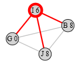
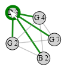
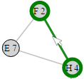
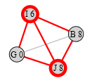
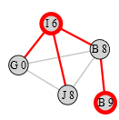
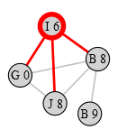
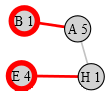

Introduction
In this experiment, we will show you a visual representation of network data and ask you
to answer questions about this data.
The network visualization will be on the left-hand side and the question and
other instructions will be on the right-hand side.
There is a time countdown for each question, and we will hide the visualization once the time is up.
You will have to provide an answer for each question before continuing.
You will be provided with your turk-code after you finish the study.
Try and answer correctly as fast as possible.
Tasks will be based on a node-link visualization of a network data.
How to interpret the Node-Link visualization for the tasks
Please take some time to review the following information on how to interpret the node-link visualization.
A node-link visualization is a network visualization that is used
to represent relationships between nodes or entities.
The nodes are represented as small circles and a line drawn between
two nodes means there is a connection between them.
For example, in the figure below, the highlighted node (red node) has three connections.

Tasks you will be performing for this study
Task1: You will determine if two highlighted nodes are directly connected.
You will be asked the following question:
"Are the two highlighted nodes directly connected? (Yes/No)"
Task2: You will determine if one highlighted node is directly connected to
a specific node.
You will be asked the following question:
"Is the highlighted node directly connected to node "name_of_node"? (Yes/No)"
Task3: You will determine if two highlighted nodes have a common neighbor.
You will be asked the following question: "Is there a common neighbor between
the two highlighted nodes? (Yes/No)"
Interactions:
- You can move nodes around when they are obstructing your view or when you want to be sure
of the links that they are connected to.
- When you hover your mouse on a node, the node and all its links are highlighted green.
- When you hover your mouse over a link, the link and the nodes that are connected to it are highlighted green

You can see example task instances with answers for the two tasks below.
Sample Question instances and answers for Task1
Note: All nodes selected as part of each question are highlighted red and all edges of
such nodes are highlighted red as well.
-
Are the two highlighted nodes directly connected? (Yes/No)

Answer: Yes.
- Are the two highlighted nodes directly connected? (Yes/No)

Answer: No.
Sample Question instances and answers for Task2
- Is the highlighted node directly connected to node "J 8"? (Yes/No).
Answer: Yes.
- Is the highlighted node directly connected
to node "B 9"? (Yes/No)

Answer: No.
Sample Question instances and answers for Task3
-
Is there a common neighbor between
the two highlighted nodes? (Yes/No)
Answer: Yes.
-
Is there a common neighbor between
the two highlighted nodes? (Yes/No)

Answer: No.